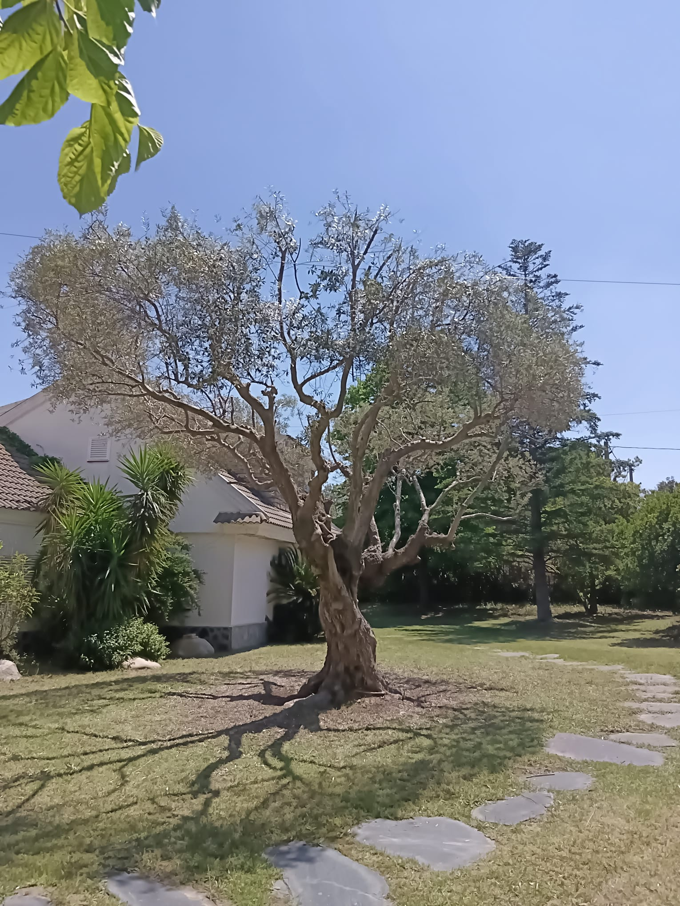

Servicios


Mantenimiento
Mantenimiento de las areas verdes de tu jardín (corta de cesped, poda, ...)


Poda
Tala y poda de arboles grandes


Diseño
Planificamos el mejor estilo para tu jardín y lo llevamos a cabo